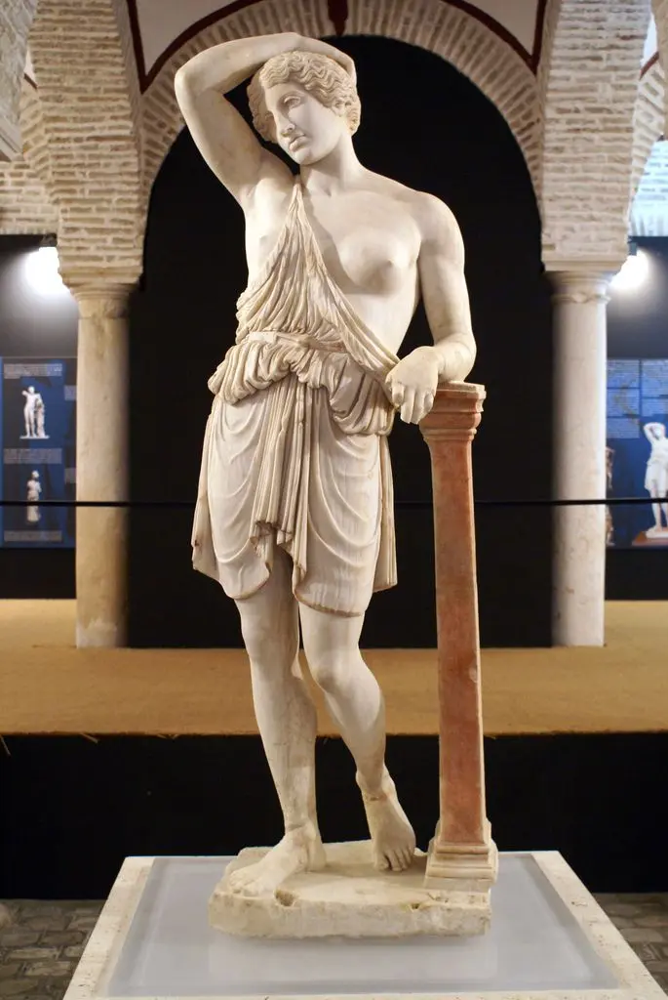

La antigua Sevilla fue denominada la colonia Julia Rómula Hispalis. Fue una de las ciudades más importantes del sur de la península ibérica, y curiosamente un personaje histórico de Roma: Julio Cesar, está documentado que estuvo en la ciudad en la época de la Guerra Civil contra Pompeyo. En la actualidad, existen numerosas referencias y obras dedicadas a él, destacamos las esculturas de la Alameda de Hércules (obra del siglo XVI).
Lugares más conocidos;
Durante la época romana, Hispalis se consolidó como uno de los centros comerciales y portuarios más importantes del sur de la península. A orillas del río Betis (actual Guadalquivir), la ciudad conectaba los recursos agrícolas y mineros de la Bética con la capital del Imperio Romano.
Restos encontrados en la plaza de la Encarnación actual donde hayamos una factoría de salazones. En el conjunto se conservan diferentes mosaicos donde destacamos el «mosaico de la medusa».
Lugar donde se encontraba una basílica romana sobre la que se edifican diferentes templos: Visigótico, árabe...
Uno de los restos más sorprendentes de aquel periodo, encontramos tres columnas que pertenecen a un templo entorno al siglo I, dos columnas del edificio fueron trasladadas en el siglo XVI a la Alameda de Hércules.
Encontrada muy recientemente en la plaza de San Francisco, es el mejor dato que hace realidad aquella leyenda que Julio César fortificó con murallas la antigua Híspalis.
Es uno de los mejores ejemplos de las ciudades romanas en Hispania. además de las típicas construcciones de este tipo de urbes, destaca el grandioso anfiteatro de Itálica, con capacidad para 25000 espectadores, lo cual lo convierte en el mayor de toda la península ibérica. Nos encontramos con uno de los más destacados de monumentos romanos en España, en la actualidad se ha solicitado ser Patrimonio de la Humanidad con la propuesta de la Ciudad Adrianea de Itálica.
La ciudad de Astigi (nombre romano de la actual Écija) se funda en el año 14 a.c. en el lugar donde existía un antigua asentamiento turdetano, llegando a convertirse en una capital de uno de los 4 conventos jurídicos de la Bética.

Su ubicación, entre Córdoba y Sevilla, y ser una zona de gran producción de aceite de oliva, producto de gran importancia en la dieta romana y que creo gran riqueza en la zona. Hizo que la ciudad creciera y tuviera un gran esplendor.